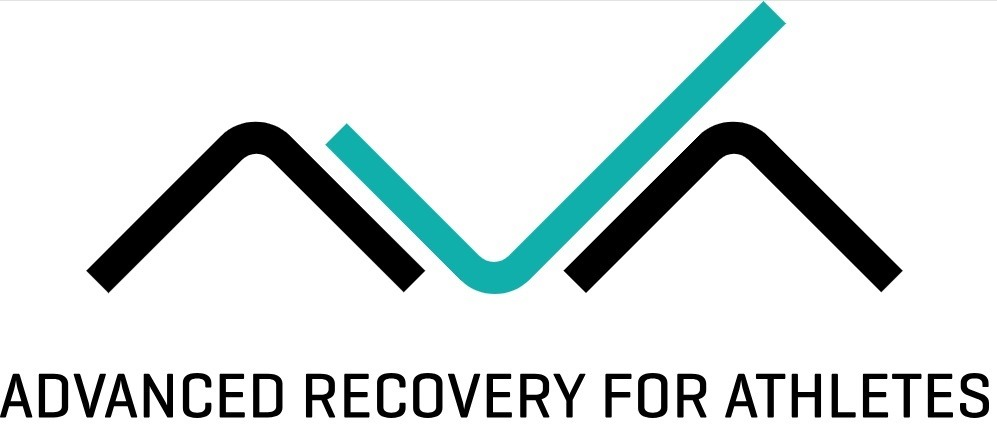
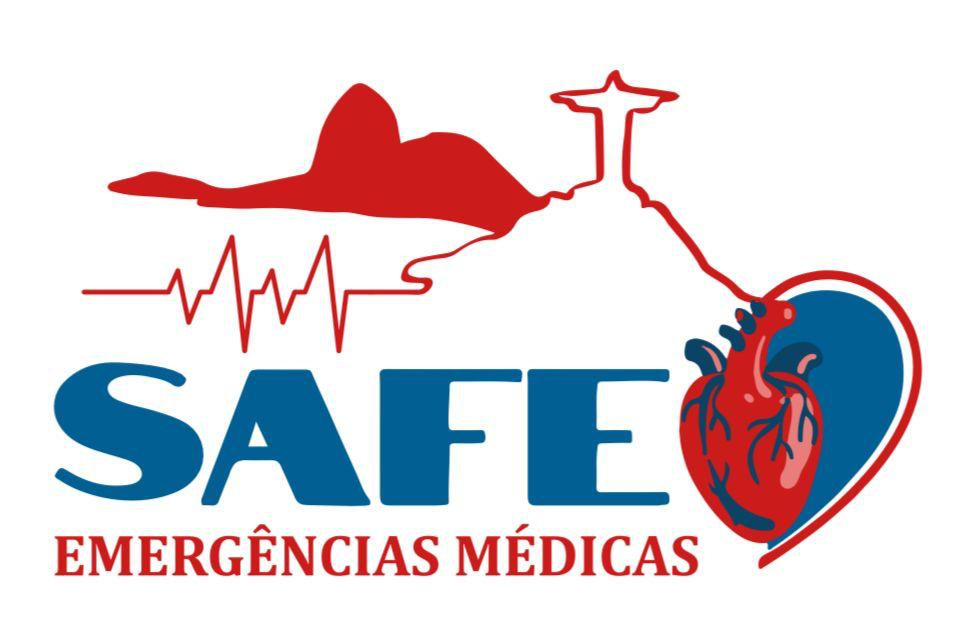

/Foto - Samuel Penna Wanner (eventos).jpg)
Prof. Dr. Samuel Wanner
UFMG
Futebol e Calor Extremo: Efeito das Condições Ambientais Sobre o Desempenho Físico
Ambientes Extremos no Esporte
e no Desempenho Operacional
O XIII Fórum Científico da EsEFEx reúne pesquisadores, militares, atletas de elite e profissionais de saúde e esporte para debater os limites do desempenho humano em ambientes extremos — do calor intenso ao frio ártico, das profundezas submarinas às altitudes elevadas.
Com 15 palestrantes nacionais de renome, distribuídos em 5 eixos temáticos, o evento integra ciência, operações militares e esporte de alto rendimento numa programação de dois dias que inclui palestras, mesas-redondas, apresentação de pôsteres e uma atividade prática de HYROX.
Nesta 13ª edição, a EsEFEx consolida-se como referência na interface entre fisiologia do exercício, medicina esportiva e preparo operacional, discutindo desde a nutrição em condições extremas até o desempenho de atletas olímpicos de esportes de inverno.
Cinco perspectivas integradas sobre o desempenho humano em ambientes extremos
Calor, frio, altitude e clima: impactos fisiológicos, bioquímicos e hormonais no organismo humano
Do submarino ao ambiente tático: desempenho operacional, hipertermia e preparo do militar em condições adversas
Atletas olímpicos de esportes de inverno, IRONMAN e altitude: estratégias de performance e gestão de risco
Métodos de treinamento, LPO e abordagem biomecânica e fisiológica do treinamento de força
Planejamento científico no futebol profissional, medicina esportiva e a mulher no futebol
Especialistas nacionais em fisiologia, medicina esportiva, treinamento militar e alto rendimento
UFMG
Futebol e Calor Extremo: Efeito das Condições Ambientais Sobre o Desempenho Físico
/Foto perfil Thiago Mendes.jpeg)
UFBA
Efeitos do Ambiente Ice nos Aspectos de Saúde e Desempenho Físico e Operacional
/WhatsApp Image 2026-03-10 at 11.28.43.jpeg)
SP
Nutrição para Esportes em Ambientes Extremos
/WhatsApp Image 2026-03-05 at 10.12.47.jpeg)
UFRJ
Impactos Bioquímicos e Hormonais de um Treinamento Militar em Clima Quente e Úmido
 Valéria Faria/foto.jpeg)
CEFAN — Marinha do Brasil
Do Submarino ao Gelo: Desempenho Militar em Ambientes Extremos
/IMG_8080.jpg)
CBMERJ
Hipertermia Maligna em Ambiente Tático: Diagnóstico e Ação em Tempo Crítico
/Oly.jpeg)
Atleta Olímpico — SP
Performance no Frio: Estratégias para Atletas de Alto Rendimento em Esportes de Inverno
/WhatsApp Image 2026-03-09 at 22.54.19.jpeg)
IRONMAN Brasil — SP
Emergências Fisiológicas e Gestão de Risco nas Provas do IRONMAN Brasil

—
Esporte de Alto Rendimento em Condições Extremas

RJ
Treino de Força e Criança: Um Olhar Biomecânico e Fisiológico

UFRJ — RJ
Métodos de Treinamento de Força

Assoc. Desportiva Centro Olímpico — SP
LPO: Benefícios na Utilização Dentro da Preparação Física

Presidente SBMEE — SPFC — SP
Medicina do Esporte no Futebol
Palmeiras — SP
Planejamento Científico do Alto Rendimento no Futebol Profissional
11 e 12 de junho de 2026 — Escola de Educação Física do Exército, Rio de Janeiro
TC Bottrel — Comandante da EsEFEx
Carol Barcelos / Cleyton Conservani
Debate: 11:10 · Moderadora: Profa. Dra. Miriam Mainenti (EsEFEx)
Debate: 14:15 · Moderadora: Cap Paula Fernandes (IPCFEx)
Debate: 16:20 · Moderador: TC Pierre (EsEFEx)
Prof. Alexandre Gurgel · Apoio médico: Ambulância SAFE
Até 18:20
Debate: 09:30 · Moderadora: Profa. Dra. Cláudia (EsEFEx)
Debate: 11:35 · Moderador: Maj Mauro (EsEFEx)
TC Bottrel · Profa. Dra. Danielli Mello
As inscrições estão abertas! Garanta sua vaga pelo Sympla. Evento gratuito para militares e estudantes.
Organizações que apoiam o XIII Fórum Científico da EsEFEx



Tudo o que você precisa saber para aproveitar o evento

1 Cantina do Jorge: serviço self-service, dentro da Fortaleza. Saia pelo saguão de entrada e siga à sua direita, em direção à praia de dentro.
2 Bar Urca: serviço a la carte. Você pode optar por subir ao restaurante ou pedir uma "barquinha" (executivo) e comer na mureta. Saia da Fortaleza e ande até a próxima esquina.
3 Garota da Urca: serviço a la carte e pratos executivos. Saia da Fortaleza, ande até a próxima esquina e siga à sua esquerda. Ao final da rua Candido Gaffré, vire à esquerda novamente.
4 Boteco Belmonte e 5 Canal 6: serviço a la carte e pratos executivos. Após passar pelo "Garota da Urca" continue, passando por baixo da passarela da TV Tupi e já verá os dois restaurantes.
Para mais informações, entre em contato conosco através do email labio.esefex@gmail.com ou preencha o formulário abaixo: